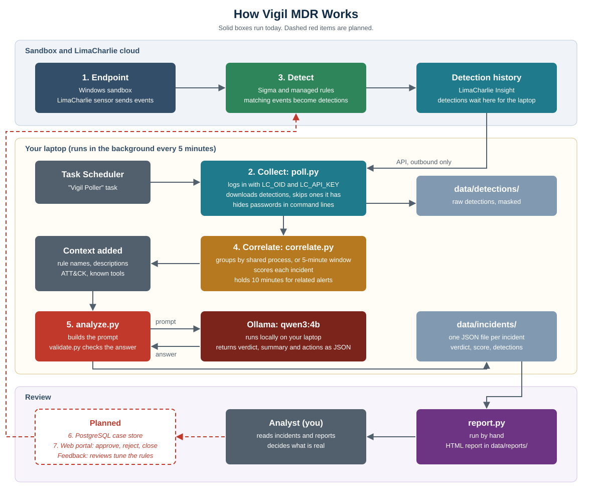

How the Vigil MDR lab project is built, how it runs, and what remains. Version of 31 October 2026.
Vigil is a personal Managed Detection and Response lab. It collects detections from LimaCharlie, groups related alerts into scored incidents, asks a local AI model for a triage opinion, stores the results in PostgreSQL, and gives an analyst a web portal to review them.
It's a learning project, not a production security service. It doesn't block attacks, and a person makes the final decision on every incident.

| Stage | Component | Status |
|---|---|---|
| 1. Endpoints | Windows sandbox with the LimaCharlie sensor | Working |
| 2. Collect | poll.py, run every 5 minutes | Working |
| 3. Detect | LimaCharlie Sigma and managed rules | Working, needs tuning |
| 4. Correlate | correlate.py | Working, needs tuning |
| 5. AI Analyze | analyze.py, build_prompt.py, Ollama | Running, accuracy not measured |
| 6. Case Store | PostgreSQL 17 through db.py | Working |
| 7. Web Portal | portal.py, FastAPI, Jinja, HTMX | Working |
| Analyst review | Approve, reject, close and reopen | Working |
| Feedback loop | Reviews tune detection rules | Planned |
| Path | Purpose |
|---|---|
poll.py | Main pipeline: fetch, mask, save, correlate, analyze, store |
adapters/limacharlie.py | Converts a detection into a simple incident shape and masks secrets |
correlate.py | Groups detections and calculates scores |
analyze.py | Calls Ollama, retries once, and defangs the answer |
build_prompt.py | Builds the prompt from core rules and matching playbooks |
validate.py | Checks the schema and rejects invented event IDs |
defang.py | Makes IPs, domains, URLs and emails unclickable |
db.py, schema.sql | PostgreSQL storage and table definitions |
portal.py | Web portal, login and security controls |
process_tree.py | Builds process trees from LimaCharlie process links |
report.py | Builds the HTML and PDF reports |
prompts/ | core.md and 11 playbooks |
schema/verdict.schema.json | Required format for AI answers |
templates/, static/ | Portal pages, styling, logo and HTMX |
tools/ | Daily status and portal password scripts |
data/ | Local detections, logs and reports, excluded from Git |
poll.py every 5 minutes. A new run doesn't start while one is active.poll.py exchanges LC_OID and LC_API_KEY for a short-lived token, then requests detections since the last check, plus 10 extra minutes. It follows next_cursor through all pages.--auth= are replaced with [REDACTED], then new detections are saved to data/detections/.| Rule | Value |
|---|---|
| Scope | Same host |
| Shared process link | Up to 30 minutes apart |
| Timing only | Up to 5 minutes apart, not for known tools |
| Maximum incident span | 1 hour |
| Prompt limits | 12 unique events, command lines cut at 400 characters, 6 rules |
Process links use LimaCharlie atoms, which are unique IDs. They're more reliable than process IDs, which Windows reuses.
| Factor | Effect |
|---|---|
| Base | Highest rule severity in the incident |
| Several ATT&CK techniques | +5 per extra technique, up to +15 |
| Several rules | +5 per extra rule, up to +10 |
| LSASS targeted | +20 |
| Known tool involved | -30 |
Scores stay between 0 and 100. A score measures alert severity, not the likelihood of an attack.
The model is qwen3:4b, called through Ollama's local API with temperature 0, an 8192-token context and JSON output forced to match the schema.
build_prompt.py maps the incident's ATT&CK techniques to playbooks and keeps at most 4 for a normal analysis.<context> block, and events go in <evidence>.validate.py checks the schema and every cited event ID in claims and the attack chain.failed.defang.py masks indicators in the answer, even if the model missed them.The answer contains a verdict, confidence, severity, summary, attack chain, claims, indicators, evidence requests and recommended actions.
| Table | Holds |
|---|---|
incidents | Host, score, time range, grouping method and context |
detections | Masked detections, rule, time, ATT&CK techniques and incident link |
events | Process events used as evidence |
analyses | Every AI verdict, including older versions |
reviews | Analyst decisions. These have no foreign key, so they survive regrouping |
PostgreSQL 17 is installed from conda-forge in F:\PostgreSQL, because the official download server refused the connection and drive C: was low on space. It accepts local connections only, and the application uses a dedicated vigil login.
--auth= values weren't found in saved detections or reports.| Test | Result |
|---|---|
| First Orborus and LSASS incident | benign, high confidence, with an unsupported claim that LSASS wasn't accessed |
| Second Orborus and LSASS incident | true_positive, critical, with an unsupported claim of credential theft. Rejected for citing an invented event ID |
| Speed | About 3 to 7 minutes per incident with the full prompts |
| Control | Implementation |
|---|---|
| Login | Every page except login and static files needs a password |
| Password storage | Salted scrypt hash in a Windows user variable |
| Sessions | Signed cookie, HttpOnly, SameSite Strict, Secure in public mode, 8-hour limit |
| Guessing | 5 failed attempts blocks an address for 15 minutes |
| Forged requests | Forms must come from the portal's own origin |
| Hosts | Only local names and *.trycloudflare.com are accepted |
| Page safety | Automatic escaping and a Content Security Policy |
| Network | Portal listens on 127.0.0.1, with public HTTPS through the tunnel |
| Item | Value |
|---|---|
| Scheduled tasks | "Vigil Poller", "Vigil PostgreSQL", "Vigil Daily Status" |
| User variables | LC_OID, LC_API_KEY, VIGIL_DB_PASSWORD, VIGIL_PORTAL_HASH, VIGIL_SESSION_SECRET |
| Logs | data\poll.log, data\portal.log, F:\PostgreSQL\postgres.log |
| Reports | data\reports\ |
| Setup and daily use | instructions.md |
data/, .venv/, API keys or passwords. Reports and detections contain hostnames, usernames, IP addresses and command lines.The live checklist is in SPRINT_STATUS.md.